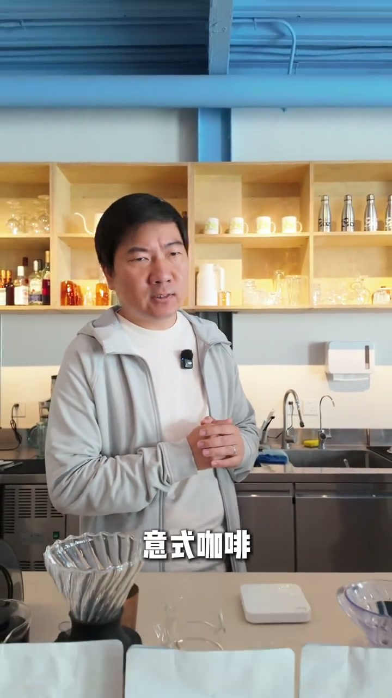
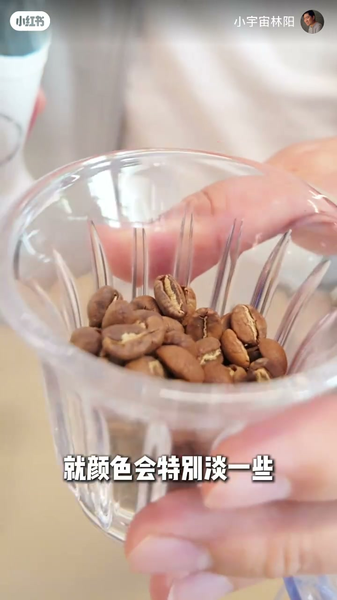
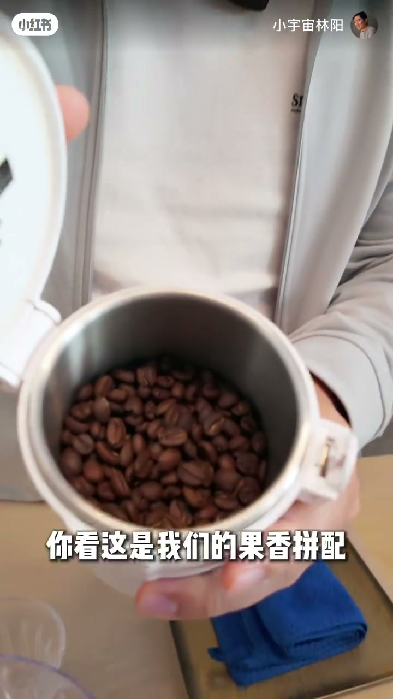
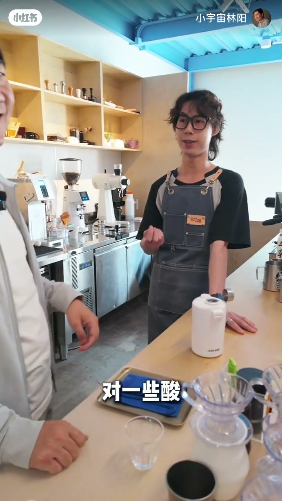
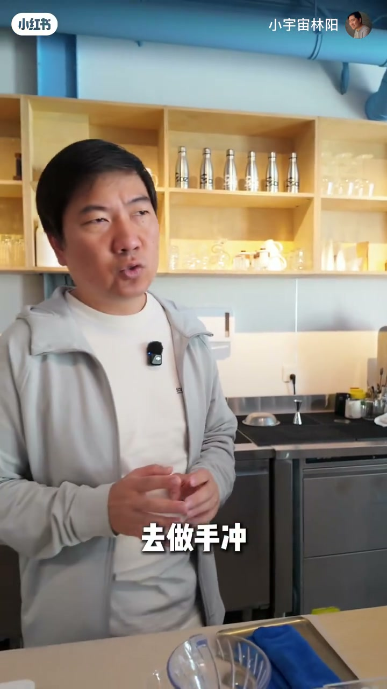
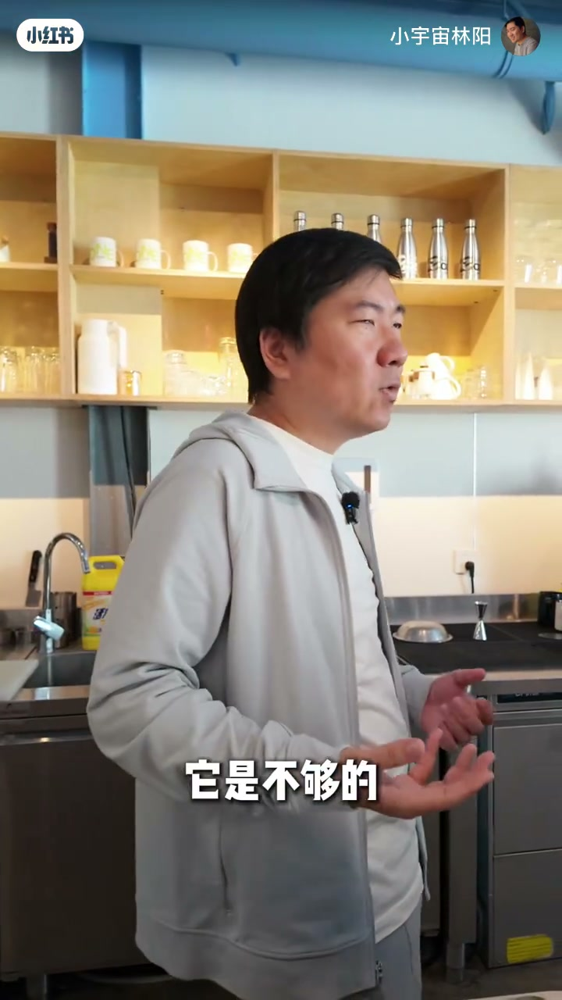

内容要点
知识结构
豆都是咖啡豆；说一样，原料同类；说不一样，烘焙、拼配与饮用目标不同。开场用「小白」式追问把评论区困惑摆上台面。
一般把手冲豆烘焙得更浅，并常用单品，为了天然风味；意式示例「果香拼配」颜色更深，往往走拼配，追求早上那杯浓缩的强烈均衡感。
手冲无高压、像泡茶过滤，要复杂丰富而非极浓；意式根源都是浓缩（高温高压、浓度高），要整体均衡与刺激。嘉宾补充：单品果香酸甜常不够饱满，拼巴西、哥伦比亚才撑起口感。
意式豆做手冲：豆子够好也能好喝，但达不到你/烘焙师想要的状态。反过来浅焙手冲豆做意式往往更糟——难磨够细、浓缩口感浓度与油脂感不足，甚至带不舒服的发酵感。收束：术业有专攻。
选豆先看冲煮目标：手冲追浅焙单品的天然复杂度；意式追更深拼配带来的均衡冲击。能交叉不代表最优，浅焙硬做浓缩尤其不划算。
图文实录
开场：评论区的老问题
视频未交代更早背景，直接从评论区切入：天天讲手冲、意式，这两种豆子到底一不一样？主持人先用口语把矛盾钉死——「其实豆都是豆……你要说它一样吗，它又不一样；你说它不一样吗，它其实是一样的」——然后邀请在场嘉宾一起用实物说清楚。
吧台前已经摆好透明滤杯、电子秤和一排豆袋，画面随时可以切到豆色对比。接着拿出一款手冲豆示例（口播称「萌拿」），让观众先看颜色。

实物对照：浅色手冲豆与更深果香拼配
滤杯特写里，手冲豆颜色明显偏淡。主持人强调这是「一般情况下」的倾向：手冲豆会烘焙得更浅一些，并且更常选用单品豆。理由很直白——若喝手冲，更多希望喝到咖啡本身天然的风味。

切到意式侧：打开自家「果香拼配」罐，豆子颜色更深，而且往往会用拼配。目标也换了——尤其是早上那杯浓缩，更想要强烈的均衡感。拼配、选豆、烘焙的思路因此分道扬镳：手冲要表现豆本身的天然风味；意式要为高压萃取准备饱满、均衡的整体口感。

嘉宾补刀：为什么意式常要拼配
嘉宾从萃取物理切入：意式是高温高压，浓度非常高，需要口感更饱满。单一豆子往往只能萃出果香；再多一些酸、一些甜、一些果香之后，「饱满」仍可能不够——于是要拼点巴西、哥伦比亚，混合起来口感才会更饱满。主持人打趣说「他讲的比我专业」，随即把这段翻译成更易记的对照。

再翻译：过滤手冲 vs 浓缩意式
主持人把方法差说成生活类比：手冲没有高压过程，水温差不多，有点像泡茶，是过滤出来的——这时要的是咖啡豆天然的复杂风味，可能不那么浓烈，但极其丰富。意式无论做成哪种饮品，根源都来自那份意式浓缩；这时要的是整体均衡、强烈口感与冲击感。无论单品还是拼配，目的都是把浓缩推到那种均衡与刺激。方向不同，也就注定豆的选择、拼配与烘焙都不一样。
交叉使用：能喝 ≠ 达标，浅焙做浓缩更糟
那非得拿意式豆去做手冲呢？主持人判断：豆子够好一定也好喝，只是达不到你最想要、也达不到烘焙师想给你提供的那个状态，可能有些差异。

反过来，拿手冲浅焙豆去做意式，结果往往更糟糕。嘉宾坦言没信心把很浅的豆子「萃好」：磨豆机研磨能力有限，要磨得极细才可能接近合格浓缩，顶级磨豆机都不容易；即便磨够细，萃出的浓缩喝起来口感浓度往往不够，缺少强烈刺激与圆润油脂感，甚至带点莫名其妙、不舒服的发酵感。主持人收束成一句：

整段视频从评论区的「一样吗」走到豆色实物、萃取取向，再到交叉使用的不对称风险，最后落在选豆服从冲煮目标——而不是「豆子万能」。